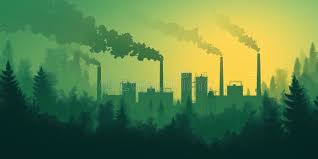

Traffic congestion is one of the major sources of air pollution in cities. When vehicles are stuck in traffic, they release more harmful gases like carbon monoxide, nitrogen oxides, and particulate matter. To reduce air pollution, cities should improve public transportation, encourage carpooling, and create more green spaces that naturally clean the air.
Reduce food waste Plan meal, so that you won’t buy surplus especially when it comes to discounts and for cooking a large group of people. Compost the foods. That means turning the foods into bio-gas and bio-fertilizers for the plants.
Increase recycling Start recycling plastics, cans and other materials to create products. In some countries like Germany, they have a system called Pfund system. It gives you €0.25 for recycling.
E waste recycling system This mean the devices you thrown away were collected and made new products in the factory. Every cities should have this system.
Energy recovery from waste There is a system to convert non-recycle waste materials to usable heat, electricity or fuel. This not only help reduce waste, it also provides a renewable energy source.
Overpopulation increases demand for housing, transportation, and resources, putting pressure on the environment. Governments can help manage this by promoting awareness of family planning, supporting education for all—especially women—and investing in urban planning to accommodate growing populations in sustainable ways. Building vertical housing and mixed-use developments can also reduce land consumption.
Access to affordable housing is essential for building inclusive and eco-friendly cities. Governments and private developers should work together to build green, energy-efficient homes in both urban and suburban areas. These homes can include solar panels, rainwater collection systems, and sustainable building materials.
Equally important is the location. Housing should be close to public services like schools, transportation, and healthcare. This reduces travel time, traffic, and pollution while improving quality of life. Programs that support low-income families in renting or owning homes help ensure no one is left behind in the transition to greener cities.
Sustainable transportation systems are key to reducing pollution and creating cleaner cities. Expanding public transit like buses and metro systems helps reduce the number of private vehicles on the road. This means less traffic and lower emissions.
Encouraging cycling and walking by building safe bike lanes and pedestrian-friendly roads also promotes healthier lifestyles and cleaner air. Cities can also offer incentives for electric vehicles and install charging stations to support clean mobility.!
Smart traffic systems that reduce idling at intersections and promote smooth traffic flow can further cut down emissions. All of these strategies combined can make a big difference in the long-term health of both people and the environment.